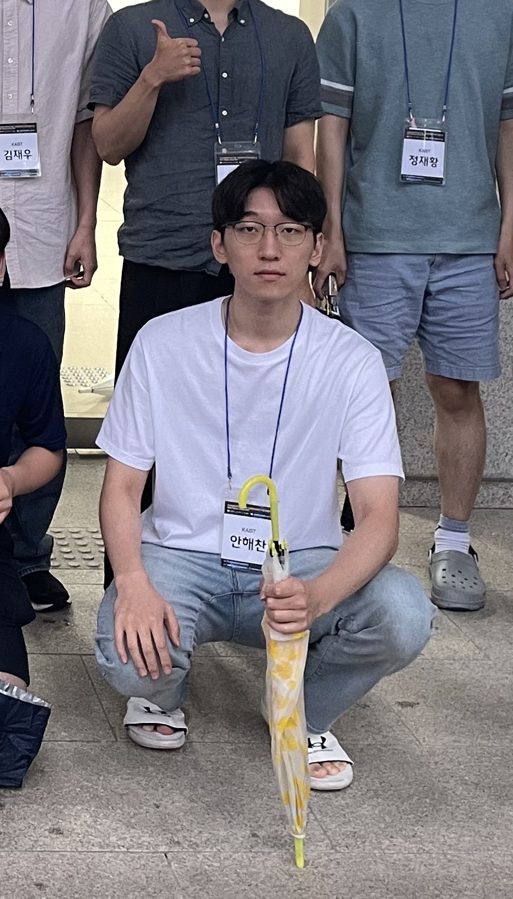

I've completed my bachelor's degree at KAIST, School of Computing.
I'm pursuing a master's degree at the graduate school of computing at KAIST, under the advisement of
Prof. Jeehoon Kang, at KAIST Concurrency & Parallelsim Lab.
Contact
- Email : haechan.an_at_kaist.ac.kr
- Github : AnHaechan
Interests
- Programming language theories including formal semantics, abstract interpretation, interactive theorem proving and concurrency
- Building, engineering complex systems such as a compiler in safe and usable languages like Rust
- How neural networks will affect software engineering and formal verification
Experiences
- 2021.01~2021.10, Undergraduate Internship, at KAIST PLRG : instrumentation of JNI programs for dataflow analysis : finding usage patterns for shared mutable states in TockOS
- 2022.01~2022.02, Startup, at Bapyak : developing data pipeline and web frontend
- 2022.03~2022.06, Undergraduate Internship, at KAIST Prosys Lab : study on program analysis (esp. incorrectness separation logic) and program synthesis
- 2022.07~, Undergraduate Internship & Master's Student, at KAIST Concurrency and Parallelism Lab : contributed to a research on ML pipeline scheduler on NPU/GPU servers (~5 mo) : worked on proof automation with AI (~11 mo) : now, starting a project on deep learning compilers
Languages
Python, Rust, Ocaml, C, Coq
Publications
One paper (contributed as a third author) is under revision.
Teaching experiences
- TA of CS420 Compiler Design , 2023 Spring
- TA of CS220 Programming Principles , 2023 Fall
Honors
- School of Computing, Dean's List, 2019 Spring
- School of Computing, Department Valedictorian, 2019 Fall
- School of Computing, Dean's List, 2020 Fall
- Graduation from School of Computing with Summa Cum Laude, 2022 Fall
- School of Computing, Excellent TAs, 2023 Spring
Courses I've taken so far
- CS220, Principles of Programming
- CS300, Introduction to Algorithms
- CS320, Programming Languages
- CS402, Logic for Computer Science
- CS420, Compiler Design
- CS431, Concurrent Programming
- CS453, Automated Software Testing
- CS520, Theory of Programming Languages
- CS524, Program Anaylsis
- IS593, Program Reasoning
- Book, Software Foundations: Logical Foundations
- Book, Software Foundations: Programming Language Foundations
- CS230, Systems Programming
- CS311, Computer Organization
- CS330, Operating Systems
- CS343, Computer Network
- CS420, Compiler Design
- CS411, Systems for AI
- CS492A, Virtualization
- EE595, Parallel Computer Architecture
- AS602, AI Semiconductor Paper Writing (this semester)
- MAS250, Probability & Statistics
- MAS350, Elementary Probability Theory
- CS372, Natural Language Processing with Python
- CS376, Machine Learning
- CS470, Introduction to Artificial Intelligence
- CS576, Computer Vision (this semester)
- EE534, Pattern Recognition
- Stanford CS224n, Natural Language Processing with Deep Learning
- CS374, Human Computer Interaction
- CS448, Introduction to Information Security
- Programming Languages & Program Analysis
- Systems & Architectures
- Machine Learning & AI
- Others